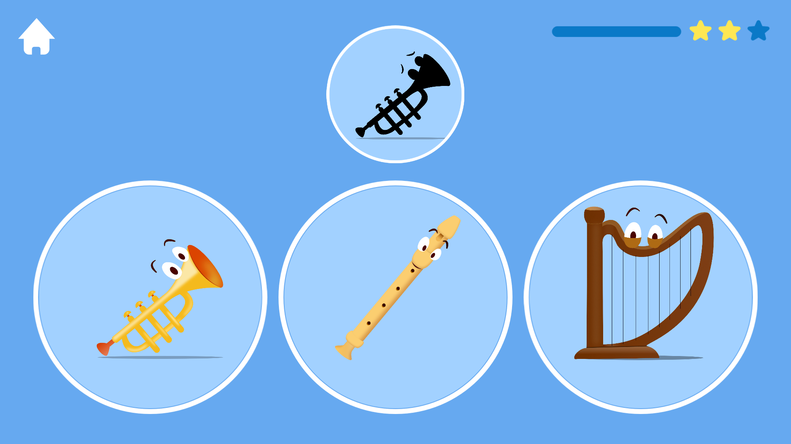
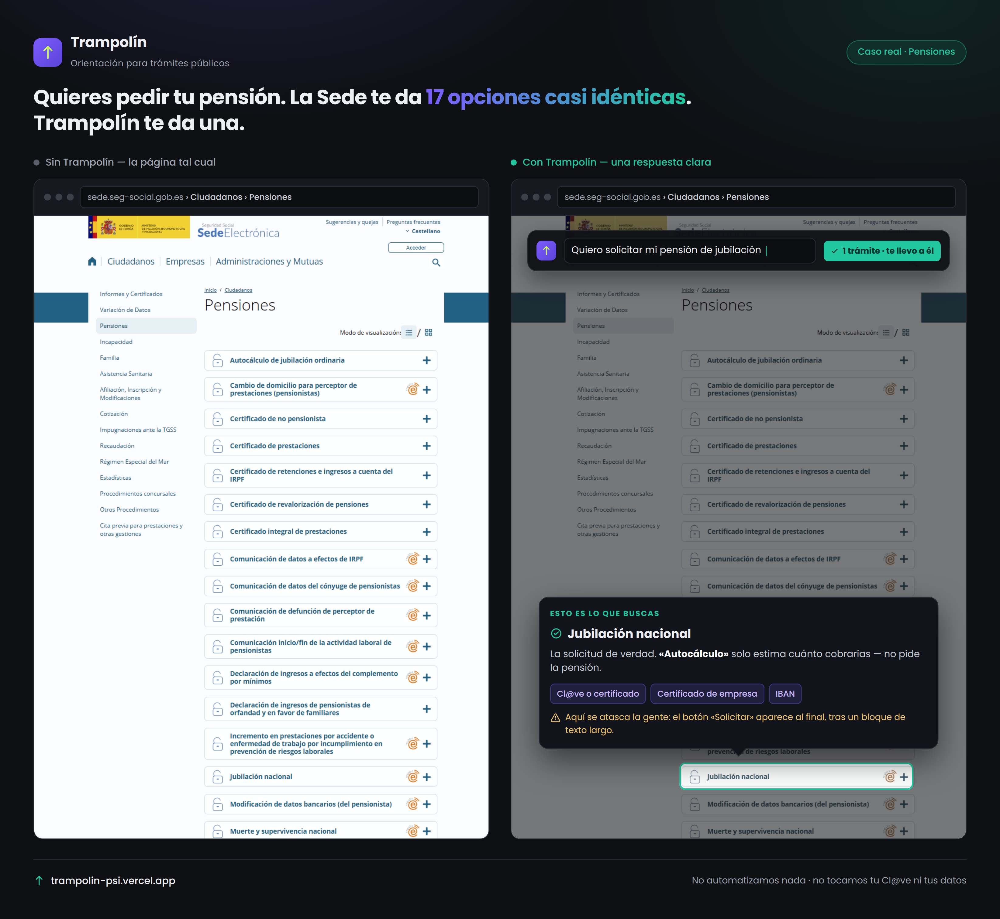
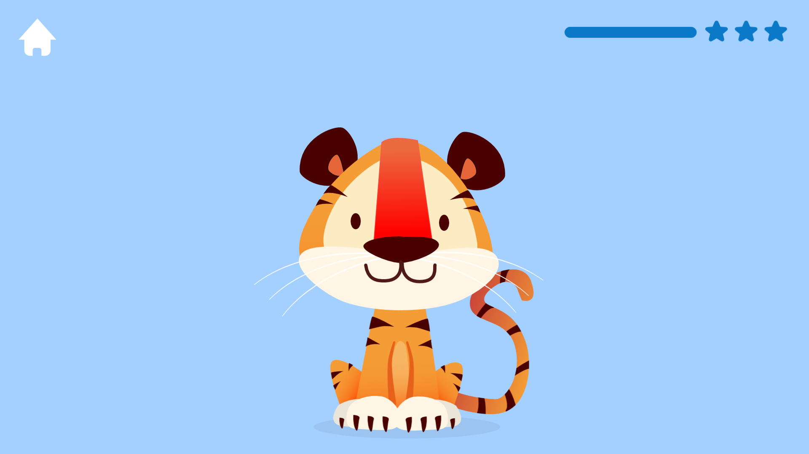
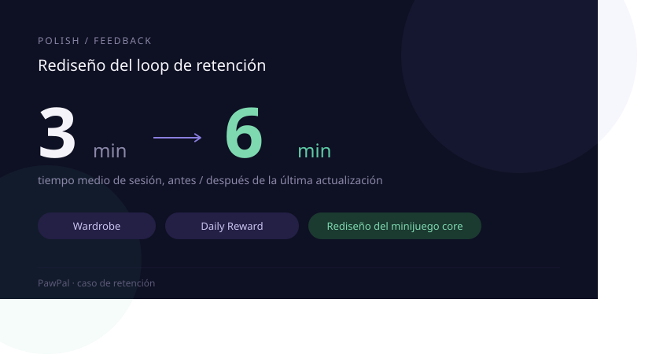

Product & UX Designer
Visual Art · Mobile · Games
10 years · 50M+ downloads
Me importa crear productos útiles, atractivos y que se sientan bien. Da igual si es un juego, una app o una herramienta: quiero que la gente lo use, lo disfrute y vuelva. Llevo 10 años haciendo eso, con productos publicados y experiencia en mobile, UX, visual design y Unity.




Trabajo seleccionado

Trampolín
Producto AI-first para orientar trámites de la Seguridad Social española. Búsqueda en lenguaje natural · API Anthropic · decisión de diseño = restricción legal.

PawPal
Onboarding, retención, sistemas de progresión y UX de monetización para un juego mobile de mascota virtual con minijuegos arcade.

The Book of Sounds
App educativa gratuita para niños. Diseñada con proceso UX completo: research, wireframes, testing y decisiones de producto documentadas.

UI Design
UI design para más de 30 apps y juegos infantiles. Ergonomía para toddlers, brand guidelines de IPs licenciadas y sistemas de componentes coherentes.
Lo que aporto
UX & Product Design
- Flujos de usuario
- Arquitectura de información
- Onboarding y retención
UI & Visual Design
- Interfaces vectoriales
- Sistemas de componentes
- Figma, Illustrator, Affinity
Technical Art
- Shaders y VFX
- Materiales e iluminación
- Integración en motor de juego
Mobile & Performance
- Pipeline de assets
- Optimización mobile
- Coste real en producción
UX aplicada a productos reales
No separo UX, visual design e implementación. Me interesa detectar qué necesita entender el usuario, qué le motiva a seguir, cómo reducir fricción y cómo convertir esas decisiones en interfaces reales, medibles e implementables.

PawPal — Retention loop redesign
Rediseño del loop principal para mejorar retorno, motivación diaria y progresión visible mediante recompensas, wardrobe y sistemas de engagement.
Trampolín — Guided UX for a complex service
Experiencia orientada a claridad y confianza en un producto AI-first, ayudando al usuario a navegar decisiones complejas con una interfaz comprensible.
The Book of Sounds — UX for toddlers
Diseño de interacción para usuarios muy pequeños: accesibilidad cognitiva, feedback inmediato y simplicidad como criterio principal.
UI Design — Scalable interface systems
Trabajo de UI para decenas de apps y juegos, con foco en componentes, consistencia visual y patrones reutilizables.
Diseño con criterio visual, técnico y de producto
Prefiero que algo exista primero, y perfeccionarlo después. Iterar rápido sobre algo real enseña más que cualquier plan perfecto sobre el papel.
Research & framing
Entender usuarios, contexto, restricciones de negocio y límites técnicos antes de diseñar pantallas.
UX flows & prototypes
Convertir problemas en flujos, wireframes y prototipos claros para validar dirección rápido.
Visual systems
Construir una capa visual coherente: UI, componentes, feedback, personajes y tono de producto.
Implementation-aware design
Diseñar pensando en Unity, mobile, assets, performance y handoff real a producción.
Measure & iterate
Revisar métricas, feedback y comportamiento para ajustar onboarding, retención y experiencia.
Perfil híbrido entre UX, arte visual y tecnología
Soy Rayco González, Product & UX Designer con background en visual art, mobile games y technical art. He trabajado en productos publicados para audiencias masivas, especialmente en mobile, juegos y experiencias infantiles, combinando criterio visual, diseño de interacción e implementación técnica.
No diseño pensando solo en pantallas bonitas: pienso en comportamiento, claridad, feedback, producción y en cómo se siente usar el producto. Mi experiencia con Unity, arte 3D/2D, UI y sistemas de juego me permite hablar el idioma de diseño, arte y desarrollo.
Mobile · Games · Kids · UX
CV y disponibilidad
Disponible para proyectos de producto digital, diseño UX/UI o posiciones relacionadas con mobile y games.
¿Tienes un producto donde el diseño marque la diferencia?
Hablemos.